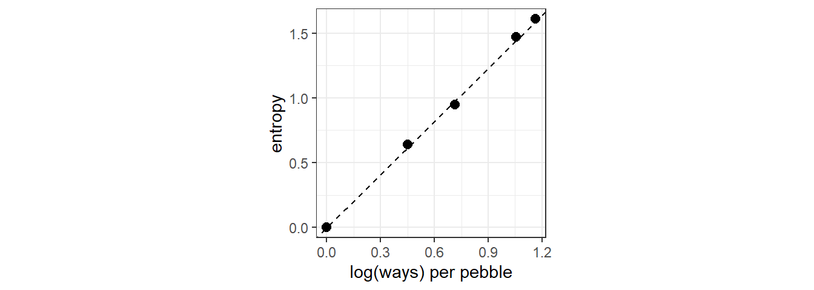
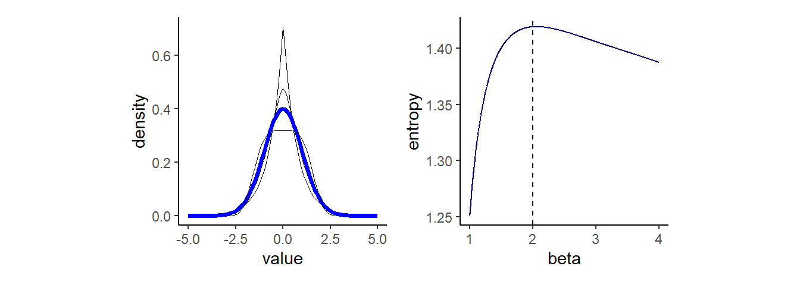
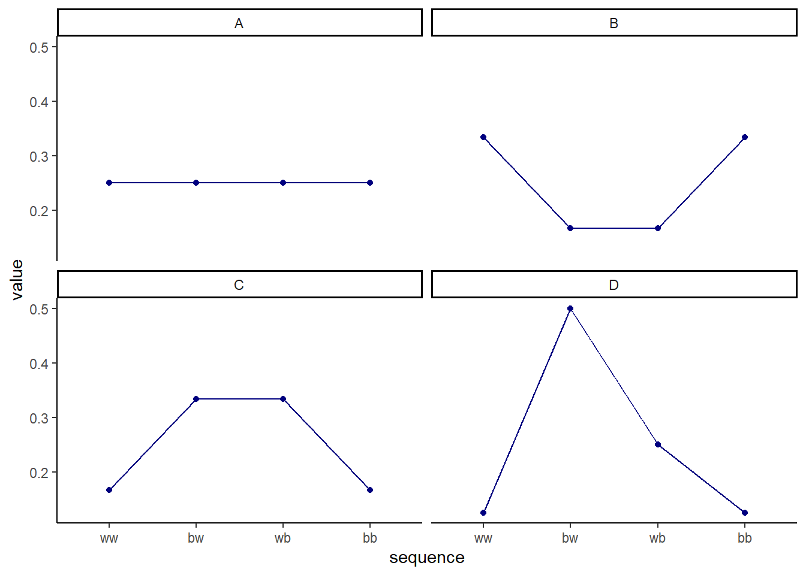
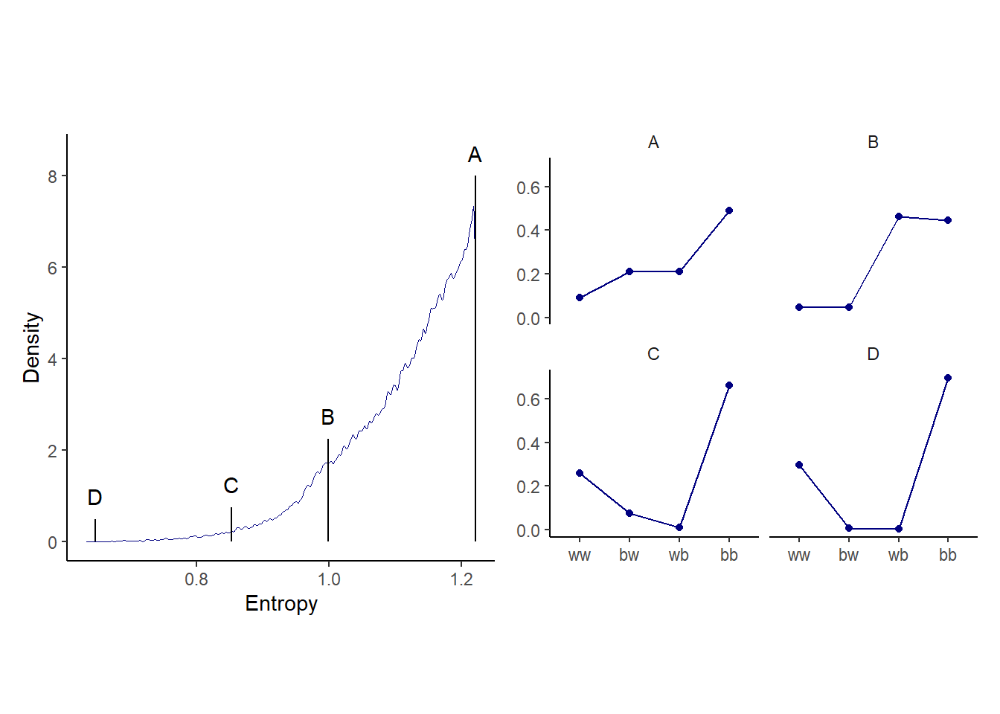

10 Big Entropy and the Generalized Linear Model
統計モデリングでは、確率分布としてエントロピーが最大になるものを選ぶべきである。
事前分布の選択で言えば、そのパラメータについて私たちが持っている科学的な知識に合うように、最も情報が少ない分布を選ぶ。尤度については、応答変数のいかなる値であってもそこから得られる可能性があるような分布を選ぶ。そうすることで、最小の情報を持ちつつも現実のデータに即した分布を得ることができる。
自然現象はエントロピーが最大になる分布に従うことが多い。
上手くいくことが多い。
10.1 Maximum entropy
第7章で見たように、infromation entropyは以下の式で表せる。
\[
H(p) = -\sum_{i} p_{i} log(p_{i})
\]
最大エントロピー原理は、この指標を確率分布を選ぶ際に適用する。例を見ていこう。10の小石を5つのバケツにランダムに入れるとする。このときバケツ3にすべての小石が入るのは1通りだが、バケツ2、バケツ3、バケツ4にそれぞれ1,8,1個の石が入るのは\(_{10}C_{8}×_{2}C_{1} = 90\)通りである。それぞれに同じ数ずつ石が入るようにすればするほど、考えうる場合の数は大きくなっていく。バケツ1~5に入る小石の数が{0,0,10,0,0}、{0,1,8,1,0}、{0,2,6,2,0}、{1,2,4,2,1}、{2,2,2,2,2}の場合を考える。
d <- tibble(a = c(0,0,10,0,0),
b = c(0,1,8,1,0),
c = c(0,2,6,2,0),
d = c(1,2,4,2,1),
e = c(2,2,2,2,2))この時、それぞれの場合のinformation entropyは、
d %>%
mutate_all(~. /sum(.)) %>%
pivot_longer(everything(), names_to = "bucket") %>%
group_by(bucket) %>%
summarise(entropy = -sum(ifelse(value==0,0, value*log(value)))) -> ent
print(ent)## # A tibble: 5 × 2
## bucket entropy
## <chr> <dbl>
## 1 a 0
## 2 b 0.639
## 3 c 0.950
## 4 d 1.47
## 5 e 1.61また、それぞれの場合に取りうる場合の数とエントロピーの関係を図示すると正比例することが分かる。
ent %>%
mutate(n_ways = c(1, 90, 1260, 37800, 113400)) %>%
group_by(bucket) %>%
mutate(log_ways = log(n_ways)/10,
text_y = ifelse(bucket < "c", entropy + .15,
entropy - .15)) %>%
ggplot(aes(x=log_ways, y=entropy))+
geom_point(size=2.5, color = "black")+
geom_abline(intercept = 0, slope=1.37, linetype=2)+
theme_bw()+
labs(x="log(ways) per pebble")+
theme(aspect.ratio=1)
このことから、information entropy の大きさはある分布に対して何通りの配置が可能であるかを表していることが分かる。このとき、最大のものを最大エントロピー分布(maximum entropy distribution)と言う。最も多くの通りが発生する分布が最もplausibleな分布なので、最大エントロピー分布が最もplausibleな分布であることが多い。もちろん、これは私たちが何を仮定するかによる。以下では、正規分布と二項分布の2つの例を見ていく。
10.1.1 Gaussian
同じ分散を持った様々な連続分布を考える。generalized normal distributuionは以下の確率密度で表せる。\(\alpha\)はスケールを、\(\beta\)は形を表すパラメータ。これらの分布を正規分布と比較することで、正規分布がもっとも均等な分布であることを見ていく。
\[
Pr(y|\mu,\alpha,\beta) = \frac{\beta}{2\alpha\Gamma(1/\beta)} e^-(\frac{|y-\mu|}{\alpha})
\]
なお、このとき\(\alpha\)は、
\[
\alpha = \sqrt{\frac{\sigma^2\Gamma(1/\beta)}{\Gamma(3/\beta)}}
\]
\(\beta\)がおよそ2のとき、つまり正規分布のときにエントロピーが最大になっていることが分かる。このように分散が一定の値のとき、正規分布が最大エントロピー分布となる。
## 分布
alpha_per_beta <- function(beta, variance =1){
sqrt(variance*gamma(1/beta)/gamma(3/beta))
}
crossing(value = seq(-5,5,by=.1),
beta = c(1,1.5,2,4)) %>%
mutate(mu = 0,
alpha = alpha_per_beta(beta)) %>%
mutate(density = (beta / (2 * alpha * gamma(1 / beta))) *
exp(1) ^ (-1 * (abs(value - mu) / alpha) ^ beta)) -> GND
GND %>%
ggplot(aes(x=value, y = density, group=beta))+
geom_line(aes(color = beta==2, size = beta==2))+
scale_color_manual(values = c("black","blue")) +
scale_size_manual(values = c(1/4, 1.25))+
theme(legend.position="none",
aspect.ratio=1) -> p1
## エントロピー
crossing(value = seq(-8,8,by=1),
beta = seq(1,4,length.out=1000)) %>%
mutate(mu = 0,
alpha = alpha_per_beta(beta, 1)) %>%
mutate(density = (beta / (2 * alpha * gamma(1 / beta))) *
exp(1) ^ (-1 * (abs(value - mu) / alpha) ^ beta)) %>%
group_by(beta) %>%
summarise(entropy = -sum(ifelse(density==0,0, density*log(density))))%>%
ggplot(aes(x = beta, y = entropy))+
geom_line(color="navy")+
geom_vline(xintercept=2, linetype=2)+
theme(aspect.ratio=1) ->p2
p1 + p2
ただし、分散以外にも様々な仮定を設けるとき、正規分布以外が適切な場合もある。
10.1.2 Binomial
もし2つの事象しか発生しないとき、一方の事象が起こる確率をpとすれば、n回試行を繰り返したときに、事象1と2がそれぞれy回とn-y回起こるとき、その確率は、
\[ Pr(y_{1},y_{2}, ..., y_{n}|n,p) = p^y(1-p)^{n-y} \]
10.1.2.1 Example 1
青と白の石が入ったカバン(それぞれが何個入っているかは不明)から2つの石を取り出す。このとき、考えうる組み合わせは{W,W}、{W,B}、{B,W}、{B,B}の4通り。それぞれの結果が起こりうる確率を割り当てていくことを考える。このとき、引いた青い石の数の期待値が1であると仮定する。
4つの場合を考える。すべて期待値は1だが、Aのみが二項分布である(p = 0.5, n =2)。
prob <- tibble(Distribution = c("A","B","C","D"),
ww = c(1/4, 2/6, 1/6, 1/8),
bw = c(1/4, 1/6, 2/6, 4/8),
wb = c(1/4, 1/6, 2/6, 2/8),
bb = c(1/4, 2/6, 1/6, 1/8))
prob %>%
mutate_if(is.numeric, ~MASS::fractions(.) %>% as.character()) %>%
kable()| Distribution | ww | bw | wb | bb |
|---|---|---|---|---|
| A | 1/4 | 1/4 | 1/4 | 1/4 |
| B | 1/3 | 1/6 | 1/6 | 1/3 |
| C | 1/6 | 1/3 | 1/3 | 1/6 |
| D | 1/8 | 1/2 | 1/4 | 1/8 |
prob %>%
pivot_longer(cols = 2:5) %>%
mutate(sequence=factor(name,levels=c("ww","bw","wb","bb")))-> prob
prob %>%
ggplot(aes(x=sequence, y=value, group=1))+
geom_point(size=1.5, color = "navy")+
geom_line(color="navy")+
facet_wrap(~Distribution)
それぞれのエントロピーを求めてみると、Aが最も高いことが分かる。ただし、この例は期待値が1という特殊な状況しか試していない。
prob %>%
group_by(Distribution) %>%
summarise(entropy = -sum(value*log(value))) %>%
flextable::flextable()Distribution | entropy |
|---|---|
A | 1.386294 |
B | 1.329661 |
C | 1.329661 |
D | 1.213008 |
10.1.2.2 Example 2
今度は、青い石の数の期待値が1.4の時を考える。これは、\(p=0.7\)の時に相当する。このとき、二項分布では…
p <- 0.7
(A <- c((1-p)^2, p*(1-p),(1-p)*p,p^2))## [1] 0.09 0.21 0.21 0.49ent_binom <- -sum(A*log(A))
print(ent_binom)## [1] 1.221729期待値が1.4になるランダムな分布をたくさん作って、二項分布と比べてみる。
sim_p <- function(seed, g = 1.4) {
set.seed(seed)
x_123 <- runif(3)
x_4 <- ((g) * sum(x_123) - x_123[2] - x_123[3]) / (2 - g)
z <- sum(c(x_123, x_4))
p <- c(x_123, x_4) / z
tibble(h = -sum(p * log(p)),
p = p,
key = factor(c("ww", "bw", "wb", "bb"), levels = c("ww", "bw", "wb", "bb")))
}sim_p(9.9, g=1.4) %>%
flextable::flextable()h | p | key |
|---|---|---|
1.022354 | 0.19710875 | ww |
1.022354 | 0.02155544 | bw |
1.022354 | 0.18422705 | wb |
1.022354 | 0.59710875 | bb |
100000回シミュレーションしてみる。
n_rep <- 1e5
d <-
tibble(seed = 1:n_rep) %>%
mutate(sim = map2(seed, 1.4, sim_p)) %>%
unnest(sim)
head(d)## # A tibble: 6 × 4
## seed h p key
## <int> <dbl> <dbl> <fct>
## 1 1 1.21 0.108 ww
## 2 1 1.21 0.151 bw
## 3 1 1.21 0.233 wb
## 4 1 1.21 0.508 bb
## 5 2 1.21 0.0674 ww
## 6 2 1.21 0.256 bw上から順番に見てみる。一番エントロピーが高いものは、ほとんど二項分布と同じであることが分かる。
d %>%
group_by(seed) %>%
arrange(desc(h)) %>%
ungroup() %>%
mutate(rank = rep(1:n_rep, each=4)) -> rank_d
head(rank_d)## # A tibble: 6 × 5
## seed h p key rank
## <int> <dbl> <dbl> <fct> <int>
## 1 55665 1.22 0.0903 ww 1
## 2 55665 1.22 0.209 bw 1
## 3 55665 1.22 0.210 wb 1
## 4 55665 1.22 0.490 bb 1
## 5 71132 1.22 0.0902 ww 2
## 6 71132 1.22 0.210 bw 2subset_d <-
rank_d %>%
filter(rank %in% c(1, 87373, n_rep-1500, n_rep-10)) %>%
mutate(height = rep(c(8, 2.25, .75, .5), each = 4),
distribution = rep(c("A","B","C","D"), each = 4))
p1 <-
d %>%
ggplot(aes(x=h))+
geom_density(size=0, adjust = 1/4, color = "navy")+
geom_linerange(data = subset_d %>%
group_by(seed) %>%
slice(1),
aes(ymin = 0, ymax = height)) +
geom_text(data = subset_d %>% group_by(seed) %>% slice(1),
aes(y = height + .5, label = distribution))+
labs(x="Entropy", y = "Density")+
theme(aspect.ratio=1)
p2 <-
subset_d %>%
ggplot(aes(x=key, y = p, group=1))+
geom_point(color="navy")+
geom_line(color="navy")+
facet_wrap(~distribution)+
labs(x = NULL, y = NULL)+
theme(strip.background = element_blank(),
aspect.ratio=0.8)
p1+p2
10.2 Generalized linear models
これまでの章では応答変数の分布として正規分布のみを用いていたが、それが適当でない場合もある(例えば、負の値をとりえない場合など)。そのため、応答変数に関する知識を用いてエントロピーを最大にする分布を用いる必要がある。これが一般化線形モデルのエッセンスである。
一般化線形モデルでは、応答変数の分布として正規分布以外も想定し、パラメータをもっともらしい範囲に収めるためにリンク関数を用いる。
10.2.1 Meet the family
統計モデリングで用いられることが多いのは、指数関数族と呼ばれる分布たちである。
- 指数分布
単位時間あたりに平均\(\lambda\)回起こる事象の発生間隔が\(x\)である確率(ex. 1時間当たり5人が訪れるレストランで、次の客が来るまでの時間間隔。)。
\[
f(x) = \begin{cases}
\lambda e^{-\lambda x} & \quad (x \ge 0) \\
0 & \quad (x <0)
\end{cases}
\]
- ガンマ分布 期間\(\frac{1}{\lambda}\)あたりに1回起こると期待されるランダムな事象が\(\alpha\)回起こるまでの時間の分布(ex. 製品部品の寿命、ガンになるまでの時間)。
\[
f(x) =
\begin{cases}
\frac {\lambda ^\alpha}{\Gamma(\alpha)} x^{\alpha-1}e^{-\lambda x} & \quad (x \ge 0)\\
0 & \quad (x <0)
\end{cases}
\]
- ポワソン分布
単位時間あたりに平均\(\lambda\)回起こる現象が、単位時間に\(x\)回起きる確率。二項分布で\(n\)がとても大きく、\(p\)が小さいとき、二項分布は\(\lambda = np\)のポワソン分布に収束する。
\[ f(x) = \frac {\lambda ^x e^{-\lambda}}{k!} \]
10.2.2 Linking linear models to distributions
リンク関数としては、よく使われるものが2つある。
logit link
パラメータを0から1までの範囲に変換する。
\[ \begin{aligned} y_{i} &\sim Binomial(n, p_{i})\\ logit(p_{i}) &= \alpha + \beta x_{i} \end{aligned} \]
なお、
\[
\begin{aligned}
logit(p_{i}) &= log \frac{p_{i}}{1-p_{i}}\\
\therefore p_{i} &= \frac{exp(\alpha + \beta x_{i})}{1 + exp(\alpha + \beta x_{i})}
\end{aligned}
\]
リンク関数を使う場合には、説明変数が1単位増えるごとに応答変数の平均に与える変化が一定でないことに注意する必要がある。ロジット関数であれば、説明変数が大きく(小さく)なるほど変化も小さくなる。
log link
パラメータを0以上に変換する。
\[ \begin{aligned} y_{i} &\sim Normal(\mu, \sigma_{i})\\ log(\sigma_{i}) &= \alpha + \beta x_{i}\\ \therefore \sigma_{i} &= exp(\alpha + \beta x_{i}) \end{aligned} \]
ログリンク関数では、説明変数が1単位増えると説明変数の平均が幾何級数的に増える。
10.2.3 Overthinking
リンク関数を導入したとき、説明変数が1単位増えるごとに応答変数の平均に与える変化が一定でないことを数学的に示す。
ロジット関数を使うとき、オッズ比\(p/(1-p)\)の変化量は、
\[ \begin{aligned} p &= \frac{exp(\alpha + \beta x)}{1 + exp(\alpha +\beta x)}\\ \frac{\partial p/(1-p)}{\partial x} &= \beta exp(\alpha +\beta x) \end{aligned} \]
すなわち、オッズ比\(p/(1-p)\)の変化量は\(x\)の値に依存することが分かる。
10.2.5 Absolute and relative differences
それぞれのパラメータは応答変数に絶対的な違いではなく、相対的な違いをもたらす。そのため、係数が大きいからと言って必ずして大きな影響を与えるとは言えないことがある。
10.2.6 GLMs and information criteria
異なる分布に当てはめたモデルを比較することはできない(Watts 2015; Städele et al. 2019)。